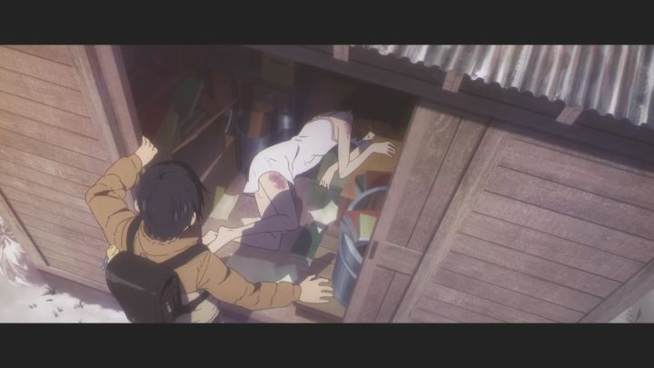

"Erased" (also translated from Japanese as roughly "the town without me") is a 2016 anime, best described as a mystery. Or mystery-thriller. There are different ways to define a good mystery story. It could be like the classic Sherlock Holmes stories, where information is slowly provided as clues to the puzzle, giving the audience a chance to guess the solution before the detective reveals the answer. "Erased" is more like a whodunit mystery; clues don't come often, instead providing a series of suspects to keep the audience guessing, until they are begging for the answer at the end. Mystery isn't a common genre in anime, and it's rarely done well. "Erased" turns out to be surprisingly effective, and mostly for reasons you might not expect.If you didn't know the synopsis from the start, the first episode might catch you off-guard. Satoru is a 29-year-old man, a failed manga-artist and part-time pizza delivery man. Naturally, he's a bit cynical. He also has a strange ability he has no control of: he calls it "Revival." Usually, he'll see a blue butterfly during his normal routine, and then time jumps back 5-10 seconds. Satoru caught on that something bad happens when these time jumps occur, and so far, he's been able to save several strangers from potential deaths. This time-travel aspect isn't really a focus of the story at all, just acting as a mysterious driver that allows the real story to occur. And what's the real mystery? Child kidnappings bring back memories of a similar serial killer from when Satoru was a kid. One of the first victims was a classmate. Someone was convicted, but insisted his innocence, and if the crimes are happening again, maybe the killer is still out there. Satoru's mother comes to a realization of who the culprit might be, but quickly gets killed in an attempt to hide the killer's identity. Satoru finds his mother's body, and as he almost gets taken away by the police as a prime suspect, time jumps again... this time, back several years. Satoru is now 10-years-old again, a child in elementary school in February. He isn't quite sure why, but he thinks Kayo, the first victim and a child that keeps quitely to herself, might be the key. So to save her (and everyone in his present), Satoru does what he can to protect her and uncover the truth.In other stories that use time-travel at all, the typical story is to have the hero fail to change the future, and to go back multiple times to fix it. In this, and many other ways, "Erased" restrains itself. After all, Satoru has no real control of his time-jump ability, so it only occurs twice in the 12-episode series. Part of the story is the mystery: who is the killer? The episodes provide many possible suspects and possible motivations for each. The true person is obvious to guess early on, but the show does its best to distract you with other guesses. But this crime is only part of the story: Satoru learns quickly that Kayo has an abusive mother, putting her life in danger, even if she herself isn't the killer in question. Most of the show is speant with Satoru in his child-form, trying his best to befriend Kayo without letting anyone catch on to his reasons. It becomes more sincere, as Satoru quickly cares for her, not just fearing for her life, but wanting to become her friend. Past the hard crimes and pulp-fiction drama, this is a story about realizing the values of youth, enjoying your times with friends, and living as a child with no regrets. Satoru happens to have some fantastic friends to help him, and one of the best moms in anime.I usually don't spend this much time talking just about the story. "Erased" isn't perfect: the culprit seems obvious after the fact, and the way it gets to the resolution left me slightly unsatisfied. The story is surprisingly low-key in its ambition. But these are minor issues. Overall, the story is gripping, and its smaller scale, as well as themes of friendship, and its mature characters... the best word might be "refreshing." After watching a lot of anime, this is a great palate cleanser. The production values vary from A-1 Pictures. At first, the animation didn't impress me at all, and some odd character design decisions didn't help (why do all the adult women have such pouty lips?). But there are moments of intention in the direction. As a child, the camera aspect ratio becomes wider, making it more clear that there is a major change in time. Character animations are subtle. Character actions (like the behavior of children) are believable. Animation still isn't quite consistent throughout, and character are sometimes drawn off-model, but it's clear that a certain level of respect for the story was present, and the studio did their best to make the show stand out. It's probably one of the better looking shows of 2016, impressive since there isn't an easily marketable visual style for it. The music is by Yuki Kajiura, at the time one of Japan's best known anime composers. Normally known for dramatic violin orchestral scores, the music here is surprisingly restrained from her. It's effective, not especially memorable, but also a relief from her typical style. Curiously, it's much easier to appreciate the music when listening outside the television series (since you can't buy the anime in the U.S.A. without the soundtrack on CD, you'll have the opportunity yourself to listen to it in that context). The opening and ending themes are fine, but like the main music, is a little more mature than it is catchy. The English dub is good, which is particularly important for this show. I admit it was a little distracting to listen to female actors voicing male children... yes, it's common, but hearing it in contrast to Satoru's deep adult voice in his head made it more noticable. All the same, Satoru's actor (both child and adult) sell the roles well, and the show wouldn't be nearly as effective if they didn't.I must mention the physical release in North America. Provided by Aniplex USA, it is predictably expensive. Only available in limited-edition Bluray, the 12 episodes are divided into two separate sets, across four discs total (instead of two, like a typical distributor might have done). At a sale price of $89.98 USD, it's even more expensive then their usual price of about $10 per episode, plus $10 for fancy packaging; we can estimate this to be roughly $13 an episode. In total, that's almost $190 for the equivalent of two feature films. But even I admit you get a lot for the price: Aside from the English dub (which isn't common with Aniplex), you get a soundtrack CD, a booklet of production drawings and interviews, and a booklet with a manga preview (surprisingly essential to the show) in each set, packaged in a genuinely sturdy and well-designed box. It's arguably one of their best localized releases. I can't justify the high price, but if you can afford it, you won't be disappointed.The "Erased" manga become a minor phenomenon in the late 2010's, with not just an anime adaptation, but quickly followed by a live-action film, then a live-action series. That isn't random. Hype can easily hurt your enjoyment of the anime, especially depending on your preferences regarding mysteries. I recommend going in blind to get the most out of it, but certainly do recommend watching it.
- "Ani" More reviews can be found at : https://2danicritic.github.io/ Previous review: review_Eden_of_the_East_-_The_King_of_Eden,_Paradise_Lost Next review: review_Ergo_Proxy